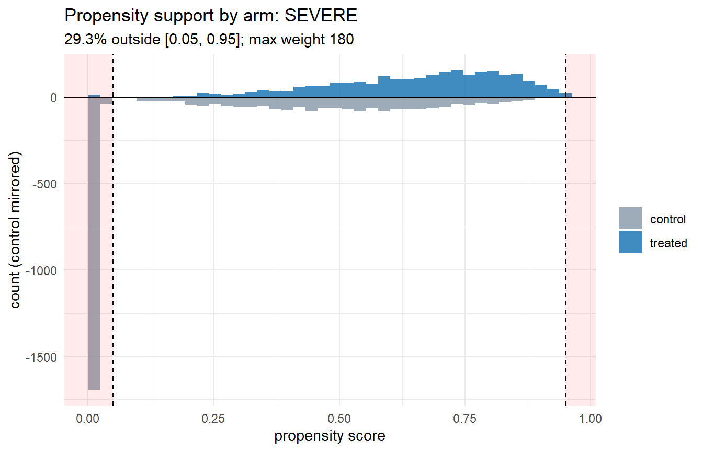
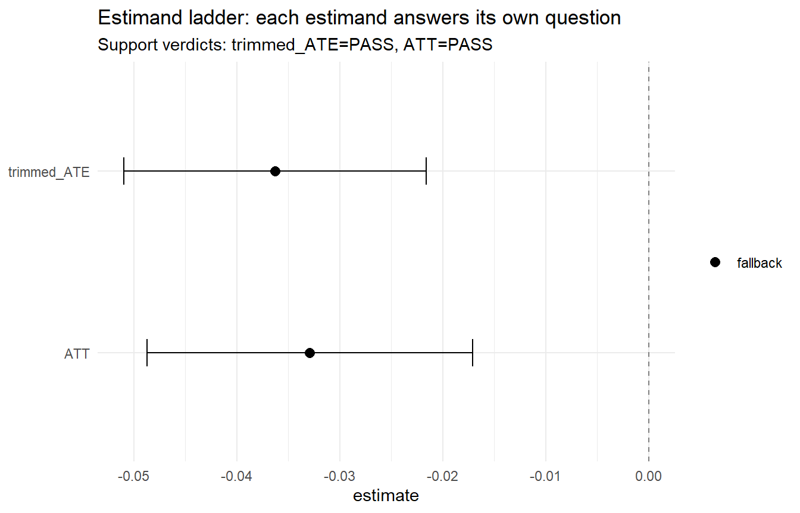

Why outcome-blind targeted learning improves on a traditional staged design, with a worked cleanTMLE analysis
Estimated reading time: 55 minutes
If you only read one thing
A clean-room design blinds the analyst, and that is worth having. It does not tell the design team whether the planned comparison can be estimated, whether the chosen estimator holds up under the data problems the fit-for-purpose review already listed, or what to make of a negative control that misbehaves. Those are statistical questions with outcome-blind answers. This chapter builds a simulated pharmacoepidemiology cohort with a known truth and runs two analyses on it: a traditional blinded analysis, which reports a narrow interval for a question the data cannot support, and a cleanTMLE staged analysis, which finds the problem before outcome access, switches to an estimand the design does support, and leaves a decision record showing when each step happened.
Learning objectives
Describe the staged clean-room design (Muntner et al. 2024) and what it does and does not protect against
Map the stages of a clean-room analysis onto the steps of the Causal Roadmap
Explain why targeted maximum likelihood estimation is a natural estimator for an outcome-blind workflow
Build an analysis lock with prespecified decision rules and understand what its fingerprint commits to
Read a support verdict and an estimand feasibility table, and explain why an infeasible ATE is a design finding rather than an estimation failure
Run an outcome-blind candidate selection and a data-quality stress test with a locked verdict and tipping points, and read a STOP verdict for what it is measuring
Use a negative-control ladder to localise residual confounding to a cohort stratum
Compare the traditional and staged analyses against the simulated truth and state what the staged analysis improved
This chapter assumes the estimators of Part II (Chapter 10, Chapter 11), the positivity diagnostics of Chapter 13, and the diagnostic framework of Chapter 18. The cleanTMLE package vignettes cover the software surface in more depth; this chapter is about the reasoning.
21.1 The clean room, and what it cannot see
A staged, clean-room design (Muntner et al. 2024) is an answer to a credibility problem in real-world evidence: an analytic decision made after seeing the treatment-outcome association is not credible, however good the analyst’s faith. The design responds with sequence and separation. Work proceeds in stages, each stage produces a document the next stage consumes, and the analyst who designs the study never sees the outcome; a review team reads the design-stage evidence and decides whether the analysis proceeds, proceeds with qualification, or stops. The published account describes the arrangement in a large distributed-database study, with a decision log recording each issue, decision, rationale, and decision-maker. Chapter 5 introduced this pre-specification discipline; this chapter is about what the blinded stages should contain.
That protection is real, and nothing here argues against it. The argument is about the content of the blinded stages. In a traditional implementation, the design-stage evidence is a cohort flow diagram, a Table 1, a propensity model, and a balance table. The review team looks at standardised mean differences, sees them fall below 0.1 after weighting or matching, and authorises the analysis. Three questions never get asked, because nothing in the blinded evidence can answer them:
Is the planned estimand estimable at all? Balance diagnostics are computed on the weighted or matched sample and say nothing about the patients the weighting effectively removed. A cohort can produce an excellent balance table for a comparison the data cannot support, because the patients who make the comparison unsupportable carry almost no weight in the diagnostic.
Will the chosen estimator hold up under the data problems the team already knows about? The fit-for-purpose review (Gatto et al. 2023) names plausible threats: covariate missingness, exposure misclassification, an unmeasured clinical judgment that steered prescribing. A traditional design records these threats in prose and proceeds. Whether the chosen estimator is stable or fragile under them is a quantitative question the blinded stage never poses.
When a negative control misbehaves, what exactly has been learned? A single negative-control estimate that excludes the null says residual confounding exists somewhere. It does not say where, whether a prespecified restriction removes it, or what that implies for the estimand.
The Causal Roadmap and targeted learning give outcome-blind answers to all three. A clean room whose blinded stages carry those answers is a better design, and on data with a known truth the difference can be measured; that measurement is the second half of this chapter.
21.2 The Causal Roadmap inside the clean room
The Causal Roadmap of Chapter 5 structures a causal analysis as a sequence of commitments: state the causal question and the target estimand; describe the observed data and how they came to be; assess identifiability; define the statistical estimand; choose an estimator with prespecified operating characteristics; prespecify sensitivity analyses; and interpret within the limits the earlier steps established. Two of its habits matter most here.
First, the roadmap treats the estimand as a decision with alternatives. The average treatment effect over the full cohort is one choice among several; the effect in the treated, the effect in the region of covariate support, and the overlap-weighted effect are others, each answering a different clinical question and each making different demands on the data (Petersen et al. 2012). A design whose data cannot identify the ATE has not failed; it has answered a design question, and the roadmap’s response is to move to an estimand the design supports and to say so. Chapter 13 made the same point for a single analysis; here it becomes a pre-registered rule.
Second, the roadmap asks for the estimator’s operating characteristics before the estimator is trusted, and gets them by simulation. Both habits work without outcome access. The clean room supplies the sequence and the blinding; the roadmap supplies what the blinded stages should contain (Gruber et al. 2024). The closest published version of this arrangement is the blinded validity-diagnostics gate of Conover et al. (2025): named diagnostics are computed while effect estimates stay blinded, and unblinding depends on passing them.
Targeted maximum likelihood estimation fits this arrangement for practical reasons:
The estimand is declared first and the estimator is defined as the targeted update of an initial outcome model toward exactly that estimand, so the analysis target is separable from the nuisance fits and can be locked before outcome access.
The nuisance strategy (the Super Learner libraries, the propensity truncation, the cross-fitting scheme) is an enumerable specification. Distinct specifications are distinct candidates, and candidates can be screened on simulated outcomes, which permits data-adaptive machine learning under full prespecification.
TMLE is doubly robust: consistent if either the outcome model or the treatment model is estimated well, which is a sensible property to want when nuisance choices had to be fixed before the outcome could inform them.
Inference comes from the efficient influence function, so the same simulated-outcome loop that screens point estimators can also check whether the reported standard errors are honest.
Each of these lets the estimator’s decisions be fixed before outcome access, which is the property a clean room needs from its estimator.
21.3 What cleanTMLE does
The cleanTMLE package (Mertens 2026) is the software layer for this combined design, for a binary point exposure and a binary outcome. Its exported surface is sixteen verbs that run in stage order against a single object, the analysis lock, and everything before the final two verbs is computable without reading the primary outcome.
Table 21.1: The sixteen verbs of cleanTMLE, by stage.
Is there residual confounding, and where does it live?
Review
design_report(), export_design_log()
What does the review team read, and what record is released?
4: estimation
estimate_effect(), run_estimand_ladder()
The declared primary and its feasible fallbacks, labelled.
The worked example leans on three design features of the package.
The lock is outcome-free by construction.create_analysis_lock() splits its input at creation: the lock’s data frame holds design data only, and the primary outcome column moves into a sealed store that only the Stage 4 estimators join back, after an outcome guard. mask_outcome() removes the store entirely, so a masked lock is outcome-free wherever it travels, and the package’s test suite asserts that the design verbs return identical output on a masked lock and under a permuted outcome. The one qualification concerns the simulated outcomes of the stress test. In the default hybrid generator mode the baseline outcome surface is fitted on the real outcome from covariates alone, never from treatment, and the package warns when treatment is predicted well enough for that fit to approximate the crude association; the external-pilot mode, which takes the baseline surface from a separate pilot cohort, is fully outcome-blind, and it is the mode this chapter uses. A SHA-256 fingerprint covers the analytic specification and a content digest of every column except the outcome, so design-data tampering is detectable while masking and unmasking leave the hash unchanged.
Decision rules are declared, fingerprinted, and applied mechanically. The stress-test thresholds (dq_thresholds) and the negative-control criteria (nc_criteria) are arguments of create_analysis_lock(), and the resulting GO / FLAG / STOP verdicts are pure functions of the declared rules, the declared threat grid, and the computed metrics. There is no judgment call at reading time, which means there is nothing for the realised effect direction to steer.
Authorisation is a person on the record. A lock created with enforce = TRUE refuses Stage 4 estimation until the outcome is unmasked through unmask_outcome() with a named approved_by, which writes the authorisation into the lock’s design log. export_design_log(format = "muntner") releases that log in the decision-log structure of the staged-analysis literature (date, stage, issue, decision, rationale, decided by).
What the software does not do
cleanTMLE does not design the target trial, validate source data or phenotypes, establish exchangeability or positivity, implement personnel role separation, or control raw-data access. Those belong to the institutional layer of the clean room: role separation between analytic and reviewing teams, credentialed data access with audit trails, protocol registration before data access, and independent review of any deviation recorded in the design log. The software produces the record that layer reads.
21.4 A simulated cohort with a known truth
The rest of the chapter runs on SPARC-AF, a simulated pharmacoepidemiology cohort built to fail in the way the staged design is meant to catch. Read it as a claims-based comparison of a newer oral anticoagulant (noac = 1) against warfarin (noac = 0) in older adults with atrial fibrillation, with a binary outcome, ischaemic stroke or systemic embolism within twelve months (stroke_12m). Because the cohort is simulated, every estimand has a computable truth, and both analyses can be graded against it. The running HAART cohort of the rest of the book is not used here: with 31 deaths and three baseline covariates it has neither the channeling nor the event count that make the staged design’s questions bite.
Three features of the cohort matter for what follows:
Contraindication channeling. Severe renal impairment steers prescribing toward warfarin almost deterministically, so one clinically coherent stratum has essentially no treated patients. The full-cohort ATE is not identified there except by extrapolation.
Heterogeneity where the channeling is. The anticoagulant is protective below severe renal impairment and mildly harmful under it, where accumulation erodes the benefit, which is exactly why prescribers channel. Extrapolation into the unsupported stratum therefore imports a benefit where the truth is harm.
An unmeasured clinical judgment. A latent fall-risk assessment U, never recorded in the data, nudges prescribers toward warfarin (almost entirely within the contraindicated stratum), raises stroke risk, and lowers health-seeking behaviour. A negative-control outcome, influenza vaccination, declared in the health-seeking-behaviour domain of Muntner et al. (2024), inherits U and is causally untouched by anticoagulant choice.
Show the generator
simulate_sparc_af <-function(n, seed) { withr::with_seed(seed, { age <-pmin(pmax(rnorm(n, 76, 6), 62), 95) sex <-rbinom(n, 1, 0.46) # 1 = female chads <-pmin(rbinom(n, 6, plogis((age -72) /12)) +1L, 7L) renal <-ifelse(runif(n) <plogis(-7.4+0.085* age), 2L,ifelse(runif(n) <plogis(-4.4+0.045* age), 1L, 0L)) frailty <-rnorm(n) +0.6* (renal ==2) +0.02* (age -76) U <-rbinom(n, 1, plogis(-1.1+0.9* frailty)) # unrecorded fall-risk judgment# Prescribing: severe renal impairment channels to warfarin almost# deterministically; the unrecorded judgment U acts almost entirely# inside that stratum. lp_A <-1.1-0.28* (chads -3) -0.45* frailty -0.05* (age -76) -1.1* (renal ==1) -5.3* (renal ==2) -1.4* U * (renal ==2) -0.1* U A <-rbinom(n, 1, plogis(lp_A))# Outcome model with the heterogeneity that motivates the# channeling: the drug is protective below severe renal impairment# and mildly harmful under it (accumulation); U raises stroke risk. lp0 <--3.55+0.34* (chads -3) +0.28* frailty +1.05* (renal ==2) +0.45* U beta_A <-ifelse(renal ==2, 0.30, -0.80) p0 <-plogis(lp0) p1 <-plogis(lp0 + beta_A) Y0 <-rbinom(n, 1, p0) Y1 <-rbinom(n, 1, p1) stroke_12m <-ifelse(A ==1, Y1, Y0)# Negative control: a health-seeking channel that inherits U and# frailty, with no causal arrow from anticoagulant choice. hs <--0.5* frailty -1.3* U +rnorm(n, 0, 0.6) nc_flu_vaccine <-rbinom(n, 1, plogis(0.0+0.9* hs))list(analysis =data.frame(noac = A, stroke_12m = stroke_12m,age = age, sex = sex, chads = chads,renal_moderate =as.integer(renal ==1),renal_severe =as.integer(renal ==2),frailty_index =round(frailty +rnorm(n, 0, 0.45), 2),nc_flu_vaccine = nc_flu_vaccine),oracle =data.frame(p1 = p1, p0 = p0, renal = renal, U = U) ) })}sparc <-simulate_sparc_af(n =6000, seed =2026)dat <- sparc$analysisoracle <- sparc$oracle
The analyst-facing data frame dat contains what a claims analyst would have: treatment, outcome, demographics, a CHA₂DS₂-VASc-style score, renal-impairment indicators, a noisy frailty index (the true frailty enters prescribing and outcome; the analyst sees a proxy), and the negative control. The oracle frame holds the potential-outcome probabilities and is used only to compute truths for grading; no analysis below touches it.
The simulated truths, on the risk-difference scale: the full-cohort ATE is -0.8 percentage points, the ATE restricted to the stratum with genuine treatment variation (renal impairment below severe) is -3.1 percentage points, and the ATT is -2.6 percentage points. The two ATEs differ because 29.2 percent of the cohort sits in the severe-renal stratum, where the true effect is null and where only 13 patients received the newer agent. Any full-cohort analysis of this cohort has to extrapolate the treated-arm surface into a stratum with almost no treated patients, or else answer a narrower question than the one it reports.
21.5 The traditional blinded analysis
Start with the analysis a careful traditional clean room would authorise. The design team is blinded to the outcome, fits a logistic propensity model, forms 1:1 nearest-neighbour matches within a caliper on the logit propensity (the most common published design in comparative pharmacoepidemiology), and inspects the balance table on the matched sample. The prespecified primary analysis is the matched risk difference, reported as the effect of treatment for the study population.
Show code
covs <-c("age", "sex", "chads", "renal_moderate", "renal_severe","frailty_index")ps_mod <-glm(reformulate(covs, "noac"), data = dat, family =binomial())lp <-qlogis(pmin(pmax(fitted(ps_mod), 1e-6), 1-1e-6))cal <-0.1*sd(lp)# Greedy 1:1 nearest-neighbour matching within the caliper,# hardest-to-match treated first.tr <-which(dat$noac ==1); ct <-which(dat$noac ==0)used <-rep(FALSE, length(ct))pairs_t <-integer(0); pairs_c <-integer(0)for (i in tr[order(lp[tr])]) { d <-abs(lp[ct] - lp[i]); d[used] <-Inf j <-which.min(d)if (is.finite(d[j]) && d[j] <= cal) { used[j] <-TRUE pairs_t <-c(pairs_t, i); pairs_c <-c(pairs_c, ct[j]) }}m_idx <-c(pairs_t, pairs_c)mA <-rep(1:0, c(length(pairs_t), length(pairs_c)))smd <-function(x, A) {abs(mean(x[A ==1]) -mean(x[A ==0])) /sqrt((var(x[A ==1]) +var(x[A ==0])) /2)}balance <-sapply(dat[m_idx, covs], smd, A = mA)round(balance, 3)#> age sex chads renal_moderate renal_severe #> 0.070 0.024 0.102 0.028 0.007 #> frailty_index #> 0.097
The matched balance table is what a traditional review examines, and it looks the way a passing table looks: the largest standardised mean difference is 0.102 (for chads), essentially at the conventional 0.1 rule of thumb, with the renal indicators balanced almost exactly. The blinded stage passes, the outcome is linked, and the reported primary result is a matched risk difference of -3.9 percentage points, 95 percent confidence interval (-5.5 to -2.3), presented as the effect of the newer anticoagulant on twelve-month stroke risk in the study population. What the balance table does not show is the denominator of the claim: the caliper silently discarded 1195 of the 2540 treated patients it could not match, and nothing in the reviewed evidence says who they were.
Grade it against the truth of the population it names. The full-cohort ATE is -0.8 percentage points; the reported interval excludes it from below. The estimate sits near the supported-region truth of -3.1 percentage points, and the reason is mechanical: the caliper removed the treated patients who had no counterparts, so the matched analysis answers a question about the matchable, while the report speaks about the population. The number is not so much wrong as mislabelled, and the label is what the clinical reader acts on: the report claims a benefit of about 3.9 percentage points for a population in which one patient in 3 was, in truth, mildly harmed.
Nothing in the traditional blinded evidence flags any of this; the balance table is excellent. The design passed every diagnostic it computed, and the diagnostics it did not compute are where the problem lived.
The core lesson of the traditional arm
A clean balance table on the matched (or weighted) sample is compatible with a comparison the data cannot support, because the patients who make the comparison unsupportable are exactly the ones the matching discards or the weights suppress. Estimability has to be assessed on the whole eligible cohort, per estimand, before outcome access. That assessment is a statistical computation, and it was available to this design team all along.
21.6 The staged targeted-learning analysis
Now the same data through the sixteen-verb workflow. The narration is longer than the code.
21.6.1 Stage 1: the lock, with the rules on it
The lock seals the specification and the decision rules together. The stress-test thresholds and the negative-control criteria go in here, before any diagnostic is computed, so the verdicts later are readings of prespecified rules. The lock is created with enforce = TRUE: estimation will refuse to run until a named approver unmasks the outcome, which makes the review step structural. The estimand ladder is the pre-registered response to a support failure: the primary is the full-cohort ATE, and if the support verdict reaches SEVERE, the declared fallbacks (the trimmed ATE, then the ATT) take over, as a logged design decision.
The lock also fixes where the simulated outcomes will come from. The plasmode generator (Franklin et al. 2014) needs a baseline outcome surface, the risk of stroke given covariates, and the default hybrid mode fits it on the study cohort’s own outcome. That fit never sees treatment, but on a cohort like this one, with prescribing this predictable, a covariate-only outcome model approximates the outcome rate by propensity stratum, which is the crude association; the package warns when the propensity c-statistic passes 0.80. This chapter therefore declares dgp_mode = "external_pilot" and takes the baseline surface from a pilot cohort, here an earlier window of the same registry simulated with a different seed, fitted from covariates alone. Every design-stage verb then reads no outcome from the study cohort.
Show code
pilot <-simulate_sparc_af(n =2000, seed =7)$analysispilot_fit <-glm(reformulate(covs, "stroke_12m"), data = pilot,family =binomial())pilot_q0 <-function(W) predict(pilot_fit, newdata = W, type ="response")
Two things about this object matter later. The primary outcome column is not in lock$data; it lives in a sealed store that only Stage 4 joins back. And the fingerprint covers the covariates, the roles, the seed, the content of every design column, and both threshold lists, so the rule the verdicts are scored against is the rule declared here, and a reviewer can check that.
21.6.2 Stage 2: is the comparison estimable?
Show code
ps <-fit_ps(lock, method ="glm")sup <-assess_support(ps)print(sup)#> Support assessment (glm fit)#> n = 6000 (2540 treated, 3460 control); g in [0.0006, 0.9617]#> 29.30% outside [0.05, 0.95]; max weight 180.5 (99th pct 6.6); ESS 182 / 2291; c-statistic 0.864#> Verdict: SEVERE#> SEVERE positivity violation: a large share of the sample has little or no counterpart in the other arm, so this estimate relies on extrapolation. Report only alongside the common-support estimate for the same contrast.#> #> Near-deterministic strata (worst first):#> covariate n_in_stratum n_treated_in_stratum p_treated_in_stratum#> renal_severe 1754 13 0.0074#> #> Tree-identified violation regions:#> subgroup n n_treated p_treated#> renal_severe>=0.5 1754 13 0.0074
The support verdict is SEVERE. Where the traditional analysis looked at balance on the weighted sample, assess_support() looks at the whole eligible cohort: the share of patients outside the prespecified propensity band, the largest implied weight, the effective sample size, and an escalation rule for covariate strata in which treatment is near-deterministic. This verdict surfaces the severe-renal channeling that the balance table absorbed: the near-deterministic stratum it names is the severe-renal group, with 13 treated patients among 1754. The mirrored histogram shows it at a glance: the control mass piled against zero has no treated counterpart.
Show code
plot(sup)

Figure 21.1: Mirrored propensity histograms on the whole eligible cohort: treated patients above the axis, controls below, the declared band marked by the dashed lines and the region outside it shaded. The control mass against zero is the severe-renal stratum the balance table absorbed.
The feasibility table then asks the estimand question directly, for every rung of the ladder:
Show code
fea <-estimand_feasibility(ps)print(fea)#> Estimand feasibility (n = 6000)#> verdict thresholds: FLAG > 1% outside / weight 30; SEVERE > 25% / 150; FAIL > 60% / 1000#> #> estimand max_weight ess_treated ess_control n_removed_treated#> ATE 180.5 181.8 2291.0 0#> trimmed_ATE [0.05, 0.95] 13.7 2111.4 1292.7 20#> trimmed_ATE [0.10, 0.90] 9.9 2050.0 1310.4 118#> ATT 12.7 2540.0 895.3 0#> ATC 179.5 56.0 3460.0 0#> ATO 1.0 2008.0 1540.2 0#> matched_ATT 1.0 1682.0 1682.0 858#> n_removed_control verdict feasible#> 0 SEVERE FALSE#> 1738 PASS TRUE#> 1750 PASS TRUE#> 0 PASS TRUE#> 0 SEVERE FALSE#> 0 PASS TRUE#> 1778 PASS TRUE#> #> Target populations:#> ATE everyone in the cohort#> trimmed_ATE [0.05, 0.95] patients whose covariates could plausibly have produced either arm (estimand changes: common-support population; g refit at estimation)#> trimmed_ATE [0.10, 0.90] patients whose covariates could plausibly have produced either arm (estimand changes: common-support population; g refit at estimation)#> ATT the treated (rows with an observed outcome) (control weights bounded by max g/(1-g) = 25.1)#> ATC the controls (treated weights bounded by max (1-g)/g = 1613.5)#> ATO patients in clinical equipoise, weighted g(1-g) (weights bounded by 1; exact covariate balance under logistic g)#> matched_ATT treated patients with a matched control (66.2% of treated retained)
The full-cohort ATE is not feasible on this design, while trimmed_ATE, ATT, ATO, matched_ATT remain available; this is the design finding of the whole analysis. The ATT’s weights on controls are bounded, and the trimmed ATE restricts to the region where both arms occur, so both survive the channeling that defeats the ATE. Because the ladder was declared at Stage 1, the switch this table recommends is a pre-registered decision.
An outcome-blind support map (simulate_support()) completes the estimability file: it resamples covariates, redraws treatment from the fitted generating propensity, simulates outcomes over a prespecified surface family, and scores each estimand’s estimator where the truth is known. A small run keeps this chapter light; a real study would use several hundred replicates.
21.6.3 Stage 2b: which estimator, and does it survive the declared threats?
The candidate set is a factorial grid over the two decisions that matter most for a TMLE under weak overlap, the propensity truncation bound and the nuisance library. The stress test fits every candidate on every simulated replicate, first on clean data and then under the declared threat grid. The fit-for-purpose concern in this cohort is the unrecorded fall-risk judgment, so the declared unmeasured-confounding grid spans odds ratios of 1.5 and 2.0 on both the treatment and outcome sides, alongside a covariate-missingness threat for the frailty index. The baseline surface comes from the pilot cohort through pilot_q0. This is the slowest step of the chapter; the two stress tests below take several minutes each.
Because the thresholds were fingerprinted at lock creation, the verdict table is a lookup, and the tipping points give the first declared severity at which each candidate crosses a locked bound. On this design the verdict is STOP for every candidate, and the baseline rows say why. With no threat applied, coverage is already 0.67 to 0.70, and the mean standard error is 42 to 50 percent of the empirical standard deviation of the estimate, so a full-cohort TMLE on this cohort reports intervals that are too narrow before any data-quality threat is applied. The stress test scores the full-cohort ATE, because that is the estimand its plasmode truth is defined on, and the support verdict has already ruled that estimand out. Under the declared threats the worst absolute bias across candidates is 0.019, against the locked bound of 0.02; the breach that drives the verdict is coverage, and it was there at baseline. The verdict is a second, outcome-blind reading of the support failure, and the documented review response it asks for is the estimand switch the ladder pre-registered.
The question the review team wants answered is about the analysis that will be reported, the trimmed ATE, which is the ATE on the common-support cohort. So the stress test is run again on that cohort: the rows whose untruncated propensity lies inside the declared band, under the same declared rules and the same pilot surface. Nothing about this restriction touches the outcome.
On the common-support cohort (4242 patients) the baseline coverage is 0.93 and the mean standard error is 95 percent of the empirical standard deviation, so the intervals a trimmed-ATE TMLE would report are honest where the full-cohort ones were not. The locked verdict reads GO across the candidates, with the worst coverage under any declared threat at 0.90 against the floor of 0.90 and the worst absolute bias at 0.006. A worst coverage that sits on the floor is a verdict without margin: at 30 replicates the Monte Carlo standard error of a coverage of 0.90 is about 0.05, so the reading says the candidates hold under the declared threats and no more, and a real study would run several hundred replicates before locking on it. For the unmeasured-confounding family the tipping table reports the odds-ratio strength at which a locked bound is first crossed, which is what a review team is asking for when it asks how strong the unrecorded judgment would have to be before the planned analysis stops being trustworthy; across the candidates that strength is not crossed inside the declared grid.
Figure 21.2: Coverage of the four candidates on the common-support cohort at each declared severity of each threat. The dashed line is the nominal 0.95; the dotted red line is the locked floor of 0.90. A candidate that stays above the floor across the grid survives the declared threats.
The candidate is then locked by the minimax rule on this stress test, and attached to the ladder on the study lock, which re-declares the ladder with the candidate on it.
Under the minimax rule across threats the selected candidate is tmle_glm_mean_t001 (truncation 0.01).
21.6.4 Stage 3: where does the residual confounding live?
The negative-control ladder fits the declared control on the full cohort and on a prespecified restriction, exclusion of the severe-renal stratum, which is the same stratum the feasibility table implicated. The control is graded against the locked null band. Chapter 18 introduced negative controls as a falsification test; the ladder turns one test into a pattern across rungs.
Show code
ncl <-negative_control_ladder( lock,restrictions =list("severe renal impairment excluded"= dat$renal_severe ==0),method ="tmle", ps_method ="glm", verbose =FALSE)print(ncl)#> Negative controls along the restriction ladder (tmle)#> #> cohort negative_control domain n#> full cohort nc_flu_vaccine health_seeking_behavior 6000#> severe renal impairment excluded nc_flu_vaccine health_seeking_behavior 4246#> estimate ci_lower ci_upper p_value flagged method#> 0.06471 0.01273 0.11668 0.01468 TRUE tmle#> 0.01386 -0.01943 0.04714 0.41452 FALSE tmle#> #> nc_flu_vaccine fails on the full cohort and is null after 'severe renal impairment excluded': the restriction, not adjustment, removed the association.#> #> Check Point 3 verdict (locked criteria: |estimate| < 0.03, rule point_in_band, min 1 per domain, all_within_band):#> cohort verdict#> full cohort STOP#> severe renal impairment excluded GO
The finding is the pattern across rungs, and the printout has two layers to read. The significance flags stay quiet on every rung: under the extreme full-cohort weights the negative-control confidence interval is wide, and a significance test has little power to see anything. The locked criteria read the same numbers differently. The declared rule asks whether the control’s estimate sits inside the prespecified null band, and on the full cohort the health-seeking control sits outside it, so the Check Point 3 verdict for that rung is STOP; after the pre-registered restriction the estimate drops inside the band and the rung reads GO. A verdict that flips from STOP to GO across one restriction localises the residual confounding to the excluded stratum, which no single-cohort negative-control check can show. Here the localisation agrees with the support analysis: the stratum the design cannot support is also the stratum through which the unrecorded judgment acts. The two blinded diagnostics, computed through different channels, point at the same patients, and the estimand switch the ladder pre-registered removes exactly those patients from the target.
21.6.5 The review, and the record
Show code
rep <-design_report(lock, sup, fea, simulation = sim,nc_ladder = ncl, dq = st_cs)print(rep)#> Design report (pre-outcome)#> Support: SEVERE; 29.3% outside [0.05, 0.95]; max weight 180; ESS 182 / 2291#> Feasible estimands: trimmed_ATE, ATT, ATO, matched_ATT#> Declared ladder: ATE -> trimmed_ATE -> ATT (trigger SEVERE)#> Support map passes: ATT, ATO, trimmed_ATE (demonstration-only replicate count)#> Negative controls: Check Point 3 under the locked criteria: GO on the most restricted rung (full cohort: STOP; severe renal impairment excluded: GO).#> DQ stress: DQ stress under the locked thresholds: GO for candidate tmle_glm_mean_t001 (worst |bias| 0.0062, worst coverage 0.90).#> #> The declared primary (ATE) is NOT supported (overlap verdict SEVERE; it also fails the support map). The ladder moves to: trimmed_ATE, then ATT. The switch is a logged design decision. DQ stress under the locked thresholds: GO for candidate tmle_glm_mean_t001 (worst |bias| 0.0062, worst coverage 0.90). Check Point 3 under the locked criteria: GO on the most restricted rung (full cohort: STOP; severe renal impairment excluded: GO).
This object is what the review team reads: the verdicts, the feasibility table, the declared ladder, the stress-test reading for the locked candidate, and the negative-control pattern, closed by a one-line recommendation. The stress reading it carries is the common-support one, the estimand the ladder resolved to; the full-cohort verdict above is the reason the ladder moved. It contains summary statistics only, and no treatment-outcome estimate exists anywhere yet.
21.6.6 Stage 4: estimate what was declared, on the record
The lock was created with enforce = TRUE, so estimation is unavailable until the outcome store is restored by a named approver, and the approval becomes a design-log entry.
Show code
masked <-mask_outcome(lock)lock <-unmask_outcome(masked, lock, approved_by ="design review panel")fit <-run_estimand_ladder(lock, ps)print(fit)#> Estimand ladder (primary: ATE [infeasible]; trigger: SEVERE)#> #> trimmed_ATE -0.0363 [ -0.0510, -0.0216] p=0.0000 n=4242 PASS#> ATT -0.0329 [ -0.0487, -0.0171] p=0.0000 n=6000 PASS#> #> Estimand labels:#> trimmed_ATE: ATE on the common-support population, trimmed g in [0.05, 0.95]#> ATT: E[Y(1)-Y(0) | A=1, outcome observed]#> #> Logged decisions:#> [estimand_switch] Primary ATE infeasible (verdict SEVERE at trigger SEVERE); moving down the declared ladder.
The ladder ran the pre-registered switch: the ATE row is refused on the recorded support verdict, and the declared fallbacks are estimated and labelled. For the grading table below, the trimmed-ATE row is the primary as the ladder resolved it.
Show code
plot(fit)

Figure 21.3: The estimand ladder as estimated: one labelled row per feasible estimand, with the refused primary absent by design.
Show code
res <- fit$tablerow_tr <- res[grepl("trimmed", res$estimand), , drop =FALSE][1, ]row_att <- res[grepl("^ATT", res$estimand), , drop =FALSE][1, ]grading <-data.frame(analysis =c("Traditional 1:1 matched (labelled population effect)","cleanTMLE trimmed ATE (declared switch)","cleanTMLE ATT (declared fallback)"),estimate_pp =c(fmt_pp(rd_trad), fmt_pp(row_tr$estimate),fmt_pp(row_att$estimate)),target_truth_pp =c(fmt_pp(truth_ate_full),fmt_pp(truth_ate_supported),fmt_pp(truth_att)),error_vs_own_target_pp =c(fmt_pp(rd_trad - truth_ate_full),fmt_pp(row_tr$estimate - truth_ate_supported),fmt_pp(row_att$estimate - truth_att)))knitr::kable(grading, align ="lrrr",col.names =c("Analysis", "Estimate (pp)","Truth for its own target (pp)","Error vs own target (pp)"))
Table 21.2: How far each analysis lands from the truth of the population it claims to describe.
Analysis
Estimate (pp)
Truth for its own target (pp)
Error vs own target (pp)
Traditional 1:1 matched (labelled population effect)
-3.9
-0.8
-3.1
cleanTMLE trimmed ATE (declared switch)
-3.6
-3.1
-0.6
cleanTMLE ATT (declared fallback)
-3.3
-2.6
-0.7
The column to read is the last one. The traditional analysis reports a full-cohort effect and misses the full-cohort truth by 3.1 percentage points, because its target and its arithmetic disagree. The staged analysis moved its target, by a pre-registered rule and with the move logged, to a question the design supports, and its error against that declared target is 0.6 percentage points. The improvement is that the claim and the estimate match, with the scope statement (29.2 percent of the cohort, the severe-renal stratum, is outside the target and received no demonstrated benefit) carried in the released record rather than lost in a label.
Show code
log_tail <-export_design_log(lock, format ="muntner")knitr::kable(tail(log_tail[, c("stage", "issue", "decision", "decided_by")], 5))
Table 21.3: The last five entries of the released decision log, in the column structure of the staged-analysis literature.
The released decision log carries the declarations, the ladder switch, and the named unmasking approval. The ladder appears twice because the Stage 2b call that attached the selected candidate re-declared it; the second entry is that amendment.
21.6.7 After the outcome: sensitivity, on the declared terms
The declared unmeasured-confounding grid gives the post-outcome sensitivity discussion its vocabulary. The E-value (Chapter 18) converts the primary estimate into the confounder strength required to explain it away, and the stress test’s tipping point states the strength at which the locked operating characteristics fail; the review compares both against what is clinically plausible for an unrecorded fall-risk judgment.
Show code
# Approximate risk ratio for the E-value: the trimmed risk difference# against the observed control-arm rate.p0_ref <-mean(dat$stroke_12m[dat$noac ==0])rr_apx <-max((p0_ref + row_tr$estimate) / p0_ref, 0.02)compute_evalue(rr_apx)#> e_value #> 2.100641
21.7 What the staged design improved
Against the three questions from the opening section:
The estimability question was asked, and answered, before outcome access. The support verdict and feasibility table converted a silent extrapolation into a design finding with a pre-registered response. The traditional analysis had no stage at which this question could arise.
The estimator was chosen by a locked rule under declared threats, for the estimand actually reported. The candidate grid, the minimax selection, the locked verdict, and the tipping points were all computed on simulated outcomes from a pilot surface against fingerprinted thresholds, so nothing about the realised effect direction could steer them, and the review team received operating characteristics instead of assurances. The full-cohort verdict itself carried information: it showed, without the outcome, that the full-cohort intervals would be too narrow, and the stress test on the common-support cohort answered the question for the trimmed ATE.
The negative control gave a location as well as an alarm. The ladder localised residual confounding to the same stratum the support analysis flagged, and the pre-registered estimand switch excised it, which turned two alarms into one design decision.
The released record supports the claim. The lock fingerprint, the design log with the named approval, and the decision-log export in the format of Muntner et al. (2024) let an external reviewer reconstruct every decision and verify that the rules applied were the rules declared.
None of this replaces the clean room’s institutional layer. Role separation, access control, and independent review stay outside the software. What the Causal Roadmap and targeted learning add is content for the blinded stages: statistical questions with outcome-blind answers, decision rules that can be fingerprinted, and an estimator that stays adaptive under full prespecification. A clean room built this way still keeps the analyst from the outcome, and it also tells the design team, before anyone sees that outcome, whether the study can deliver the answer it intends to claim.
21.8 Connections to other chapters
The staged workflow draws on tools developed throughout the handbook: the Causal Roadmap and the pre-specification discipline of Chapter 5, the positivity diagnostics and estimand-adaptation logic of Chapter 13, the design diagnostics, negative controls, and E-values of Chapter 18, and the TMLE and Super Learner machinery of Chapter 10 and Chapter 11. The hybrid RCT and RWD designs of Chapter 27 face the same governance questions with two data sources instead of one.
21.9 Check your understanding
Q1. The traditional analysis produced an excellent balance table and a narrow confidence interval. What did it get wrong, and why did its own diagnostics not show it?
It reported a matched risk difference as the effect in the study population, but the caliper had discarded the treated patients with no counterparts, almost all of them in the severe-renal stratum where the true effect is null. The estimate answered a question about the matchable patients while the label claimed the whole population. Balance diagnostics are computed on the matched sample, so the patients who made the comparison unsupportable were exactly the ones absent from the diagnostic. Estimability has to be assessed on the whole eligible cohort, per estimand, which is what assess_support() and estimand_feasibility() do.
Q2. The full-cohort stress test returned STOP for every candidate before any data-quality threat was applied. What was it measuring, and what is the correct response?
The stress test scores each candidate’s bias, RMSE, and coverage on simulated outcomes whose truth is the full-cohort ATE. Under the severe-renal channeling, every candidate’s confidence intervals were too narrow even on clean data, because truncation limits variance but not extrapolation. The verdict is therefore an outcome-blind reading of the same support failure the feasibility table found, not a data-quality finding. The correct response is the estimand switch the ladder pre-registered, followed by a second stress test on the common-support cohort, which is the estimand that will actually be reported.
Q3. What does the negative-control ladder show that a single negative-control estimate cannot?
A single negative-control estimate outside the null band says residual confounding exists somewhere. Fitting the same control across prespecified restrictions shows where it lives: a verdict that flips from STOP on the full cohort to GO once the severe-renal stratum is excluded localises the confounding to that stratum. When the localisation agrees with the support analysis, the pre-registered estimand switch removes exactly the affected patients from the target, and two alarms become one design decision.
21.10 Further reading
Muntner et al. (2024). The staging and clean-room constructs, with the decision-log format this chapter exports.
Gatto et al. (2023). The SPIFD2 structured process for fit-for-purpose study design and data, whose threat list the stress test quantifies.
Conover et al. (2025). Pre-specified validity diagnostics verified before unblinding effect estimates.
Gruber et al. (2024). Developing a targeted-learning-based statistical analysis plan.
Petersen et al. (2012). Diagnosing and responding to positivity violations, including the estimand alternatives the ladder draws on.
Franklin et al. (2014). Plasmode simulation for evaluating pharmacoepidemiologic methods.
Mertens (2026). The cleanTMLE package and its vignettes.
Part V puts the pieces together. Chapter 22 carries one question from a clinical conversation to a defended estimate, with every decision in view.
Conover, Mitchell M, Martijn J Schuemie, Marc A Suchard, George Hripcsak, Patrick B Ryan, et al. 2025. “Objective Study Validity Diagnostics: A Framework Requiring Pre-Specified, Empirical Verification of Study Validity Before Unblinding Effect Estimates.”Journal of the American Medical Informatics Association 32 (3): 518–28.
Franklin, Jessica M, Sebastian Schneeweiss, Jennifer M Polinski, and Jeremy A Rassen. 2014. “Plasmode Simulation for the Evaluation of Pharmacoepidemiologic Methods in Complex Healthcare Databases.”Computational Statistics & Data Analysis 72: 219–26. https://doi.org/10.1016/j.csda.2013.10.018.
Gatto, Nicolle M, Sarah E Vititoe, Ezra Rubinstein, Robert F Reynolds, and Ulka B Campbell. 2023. “A Structured Process to Identify Fit-for-Purpose Study Design and Data to Generate Valid and Transparent Real-World Evidence for Regulatory Uses.”Clinical Pharmacology & Therapeutics 113 (6): 1235–39. https://doi.org/10.1002/cpt.2925.
Gruber, Susan, Hana Lee, Rachael V Phillips, Martin Ho, and Mark J van der Laan. 2024. “Developing a Targeted Learning-Based Statistical Analysis Plan.”Statistics in Biopharmaceutical Research 16 (1): 1–15. https://doi.org/10.1080/19466315.2022.2116104.
Mertens, Andrew. 2026. “cleanTMLE: An R Package for Staged, Outcome-Blind Targeted Learning with Plasmode Data-Quality Stress Testing.”https://github.com/amertens/cleanTMLE.
Muntner, Paul, Rohini K Hernandez, Seamus T Kent, et al. 2024. “Staging and Clean Room: Constructs Designed to Facilitate Transparency and Reduce Bias in Comparative Analyses of Real-World Data.”Pharmacoepidemiology and Drug Safety 33 (3): e5770. https://doi.org/10.1002/pds.5770.
Petersen, Maya L., Kristin E. Porter, Susan Gruber, Yue Wang, and Mark J. van der Laan. 2012. “Diagnosing and Responding to Violations in the Positivity Assumption.”Statistical Methods in Medical Research 21 (1): 31–54.
Source Code
---format: html---# Staged and Clean-Room Designs for Real-World Evidence {#sec-clean-room}*Why outcome-blind targeted learning improves on a traditional staged design, with a worked `cleanTMLE` analysis**Estimated reading time: 55 minutes*::: {.callout-tip}## If you only read one thingA clean-room design blinds the analyst, and that is worth having. It does not tell the design team whether the planned comparison can be estimated, whether the chosen estimator holds up under the data problems the fit-for-purpose review already listed, or what to make of a negative control that misbehaves. Those are statistical questions with outcome-blind answers. This chapter builds a simulated pharmacoepidemiology cohort with a known truth and runs two analyses on it: a traditional blinded analysis, which reports a narrow interval for a question the data cannot support, and a `cleanTMLE` staged analysis, which finds the problem before outcome access, switches to an estimand the design does support, and leaves a decision record showing when each step happened.:::::: {.callout-note}## Learning objectives- Describe the staged clean-room design [@muntner2024staging] and what it does and does not protect against- Map the stages of a clean-room analysis onto the steps of the Causal Roadmap- Explain why targeted maximum likelihood estimation is a natural estimator for an outcome-blind workflow- Build an analysis lock with prespecified decision rules and understand what its fingerprint commits to- Read a support verdict and an estimand feasibility table, and explain why an infeasible ATE is a design finding rather than an estimation failure- Run an outcome-blind candidate selection and a data-quality stress test with a locked verdict and tipping points, and read a STOP verdict for what it is measuring- Use a negative-control ladder to localise residual confounding to a cohort stratum- Compare the traditional and staged analyses against the simulated truth and state what the staged analysis improved:::*This chapter assumes the estimators of Part II (@sec-doubly-robust-tmle, @sec-superlearner), the positivity diagnostics of @sec-positivity-overlap, and the diagnostic framework of @sec-advanced-diagnostics. The `cleanTMLE` package vignettes cover the software surface in more depth; this chapter is about the reasoning.*```{r}#| label: setup#| include: falseknitr::opts_chunk$set(collapse =TRUE,comment ="#>",fig.width =7,fig.height =4.5,fig.align ="center",message =FALSE,warning =FALSE)library(cleanTMLE)library(ggplot2)fmt_pp <-function(x, d =1) sprintf("%.*f", d, 100* x)fmt_ci <-function(lo, hi, d =1)sprintf("(%s to %s)", fmt_pp(lo, d), fmt_pp(hi, d))fmt_range <-function(x, d =2) { r <-sprintf("%.*f", d, range(x, na.rm =TRUE))if (r[1] == r[2]) r[1] elsepaste(r[1], "to", r[2])}fmt_tip <-function(x) {if (all(is.na(x))) "not crossed inside the declared grid"elsesprintf("%.1f", min(x, na.rm =TRUE))}```---## The clean room, and what it cannot seeA staged, clean-room design [@muntner2024staging] is an answer to a credibility problem in real-world evidence: an analytic decision made after seeing the treatment-outcome association is not credible, however good the analyst's faith. The design responds with sequence and separation. Work proceeds in stages, each stage produces a document the next stage consumes, and the analyst who designs the study never sees the outcome; a review team reads the design-stage evidence and decides whether the analysis proceeds, proceeds with qualification, or stops. The published account describes the arrangement in a large distributed-database study, with a decision log recording each issue, decision, rationale, and decision-maker. @sec-roadmap introduced this pre-specification discipline; this chapter is about what the blinded stages should contain.That protection is real, and nothing here argues against it. The argument is about the content of the blinded stages. In a traditional implementation, the design-stage evidence is a cohort flow diagram, a Table 1, a propensity model, and a balance table. The review team looks at standardised mean differences, sees them fall below 0.1 after weighting or matching, and authorises the analysis. Three questions never get asked, because nothing in the blinded evidence can answer them:1. **Is the planned estimand estimable at all?** Balance diagnostics are computed on the weighted or matched sample and say nothing about the patients the weighting effectively removed. A cohort can produce an excellent balance table for a comparison the data cannot support, because the patients who make the comparison unsupportable carry almost no weight in the diagnostic.2. **Will the chosen estimator hold up under the data problems the team already knows about?** The fit-for-purpose review [@gatto2023spifd2] names plausible threats: covariate missingness, exposure misclassification, an unmeasured clinical judgment that steered prescribing. A traditional design records these threats in prose and proceeds. Whether the chosen estimator is stable or fragile under them is a quantitative question the blinded stage never poses.3. **When a negative control misbehaves, what exactly has been learned?** A single negative-control estimate that excludes the null says residual confounding exists somewhere. It does not say where, whether a prespecified restriction removes it, or what that implies for the estimand.The Causal Roadmap and targeted learning give outcome-blind answers to all three. A clean room whose blinded stages carry those answers is a better design, and on data with a known truth the difference can be measured; that measurement is the second half of this chapter.---## The Causal Roadmap inside the clean roomThe Causal Roadmap of @sec-roadmap [@petersen2014causal; @dang2023causal] structures a causal analysis as a sequence of commitments: state the causal question and the target estimand; describe the observed data and how they came to be; assess identifiability; define the statistical estimand; choose an estimator with prespecified operating characteristics; prespecify sensitivity analyses; and interpret within the limits the earlier steps established. Two of its habits matter most here.First, the roadmap treats the estimand as a decision with alternatives. The average treatment effect over the full cohort is one choice among several; the effect in the treated, the effect in the region of covariate support, and the overlap-weighted effect are others, each answering a different clinical question and each making different demands on the data [@petersen2012positivity]. A design whose data cannot identify the ATE has not failed; it has answered a design question, and the roadmap's response is to move to an estimand the design supports and to say so. @sec-positivity-overlap made the same point for a single analysis; here it becomes a pre-registered rule.Second, the roadmap asks for the estimator's operating characteristics before the estimator is trusted, and gets them by simulation. Both habits work without outcome access. The clean room supplies the sequence and the blinding; the roadmap supplies what the blinded stages should contain [@gruber2022sap]. The closest published version of this arrangement is the blinded validity-diagnostics gate of @conover2025diagnostics: named diagnostics are computed while effect estimates stay blinded, and unblinding depends on passing them.Targeted maximum likelihood estimation fits this arrangement for practical reasons:- The estimand is declared first and the estimator is defined as the targeted update of an initial outcome model toward exactly that estimand, so the analysis target is separable from the nuisance fits and can be locked before outcome access.- The nuisance strategy (the Super Learner libraries, the propensity truncation, the cross-fitting scheme) is an enumerable specification. Distinct specifications are distinct candidates, and candidates can be screened on simulated outcomes, which permits data-adaptive machine learning under full prespecification.- TMLE is doubly robust: consistent if either the outcome model or the treatment model is estimated well, which is a sensible property to want when nuisance choices had to be fixed before the outcome could inform them.- Inference comes from the efficient influence function, so the same simulated-outcome loop that screens point estimators can also check whether the reported standard errors are honest.Each of these lets the estimator's decisions be fixed before outcome access, which is the property a clean room needs from its estimator.---## What `cleanTMLE` doesThe `cleanTMLE` package [@mertens2026cleantmle] is the software layer for this combined design, for a binary point exposure and a binary outcome. Its exported surface is sixteen verbs that run in stage order against a single object, the analysis lock, and everything before the final two verbs is computable without reading the primary outcome.| Stage | Verbs | Blinded question answered ||---|---|---|| 1: lock and declarations | `create_analysis_lock()`, `declare_negative_controls()`, `declare_estimand_ladder()` | What exactly is the plan, and what rules will decisions follow? || 2: design estimability | `fit_ps()`, `assess_support()`, `estimand_feasibility()`, `simulate_support()` | Is the planned comparison estimable, and with which estimand? || 2b: candidates and stress test | `define_candidates()`, `stress_test()`, `select_candidate()` | Which estimator specification, and does it survive the declared threats? || 3: residual confounding | `negative_control_ladder()`, `check_process_indicators()` | Is there residual confounding, and where does it live? || Review | `design_report()`, `export_design_log()` | What does the review team read, and what record is released? || 4: estimation | `estimate_effect()`, `run_estimand_ladder()` | The declared primary and its feasible fallbacks, labelled. |: The sixteen verbs of `cleanTMLE`, by stage. {#tbl-cleantmle-verbs}The worked example leans on three design features of the package.**The lock is outcome-free by construction.** `create_analysis_lock()` splits its input at creation: the lock's data frame holds design data only, and the primary outcome column moves into a sealed store that only the Stage 4 estimators join back, after an outcome guard. `mask_outcome()` removes the store entirely, so a masked lock is outcome-free wherever it travels, and the package's test suite asserts that the design verbs return identical output on a masked lock and under a permuted outcome. The one qualification concerns the simulated outcomes of the stress test. In the default hybrid generator mode the baseline outcome surface is fitted on the real outcome from covariates alone, never from treatment, and the package warns when treatment is predicted well enough for that fit to approximate the crude association; the external-pilot mode, which takes the baseline surface from a separate pilot cohort, is fully outcome-blind, and it is the mode this chapter uses. A SHA-256 fingerprint covers the analytic specification and a content digest of every column except the outcome, so design-data tampering is detectable while masking and unmasking leave the hash unchanged.**Decision rules are declared, fingerprinted, and applied mechanically.** The stress-test thresholds (`dq_thresholds`) and the negative-control criteria (`nc_criteria`) are arguments of `create_analysis_lock()`, and the resulting GO / FLAG / STOP verdicts are pure functions of the declared rules, the declared threat grid, and the computed metrics. There is no judgment call at reading time, which means there is nothing for the realised effect direction to steer.**Authorisation is a person on the record.** A lock created with `enforce = TRUE` refuses Stage 4 estimation until the outcome is unmasked through `unmask_outcome()` with a named `approved_by`, which writes the authorisation into the lock's design log. `export_design_log(format = "muntner")` releases that log in the decision-log structure of the staged-analysis literature (date, stage, issue, decision, rationale, decided by).::: {.callout-warning}## What the software does not do`cleanTMLE` does not design the target trial, validate source data or phenotypes, establish exchangeability or positivity, implement personnel role separation, or control raw-data access. Those belong to the institutional layer of the clean room: role separation between analytic and reviewing teams, credentialed data access with audit trails, protocol registration before data access, and independent review of any deviation recorded in the design log. The software produces the record that layer reads.:::---## A simulated cohort with a known truthThe rest of the chapter runs on SPARC-AF, a simulated pharmacoepidemiology cohort built to fail in the way the staged design is meant to catch. Read it as a claims-based comparison of a newer oral anticoagulant (`noac = 1`) against warfarin (`noac = 0`) in older adults with atrial fibrillation, with a binary outcome, ischaemic stroke or systemic embolism within twelve months (`stroke_12m`). Because the cohort is simulated, every estimand has a computable truth, and both analyses can be graded against it. The running HAART cohort of the rest of the book is not used here: with 31 deaths and three baseline covariates it has neither the channeling nor the event count that make the staged design's questions bite.Three features of the cohort matter for what follows:- **Contraindication channeling.** Severe renal impairment steers prescribing toward warfarin almost deterministically, so one clinically coherent stratum has essentially no treated patients. The full-cohort ATE is not identified there except by extrapolation.- **Heterogeneity where the channeling is.** The anticoagulant is protective below severe renal impairment and mildly harmful under it, where accumulation erodes the benefit, which is exactly why prescribers channel. Extrapolation into the unsupported stratum therefore imports a benefit where the truth is harm.- **An unmeasured clinical judgment.** A latent fall-risk assessment `U`, never recorded in the data, nudges prescribers toward warfarin (almost entirely within the contraindicated stratum), raises stroke risk, and lowers health-seeking behaviour. A negative-control outcome, influenza vaccination, declared in the health-seeking-behaviour domain of @muntner2024staging, inherits `U` and is causally untouched by anticoagulant choice.```{r}#| label: dgp#| code-fold: true#| code-summary: "Show the generator"simulate_sparc_af <-function(n, seed) { withr::with_seed(seed, { age <-pmin(pmax(rnorm(n, 76, 6), 62), 95) sex <-rbinom(n, 1, 0.46) # 1 = female chads <-pmin(rbinom(n, 6, plogis((age -72) /12)) +1L, 7L) renal <-ifelse(runif(n) <plogis(-7.4+0.085* age), 2L,ifelse(runif(n) <plogis(-4.4+0.045* age), 1L, 0L)) frailty <-rnorm(n) +0.6* (renal ==2) +0.02* (age -76) U <-rbinom(n, 1, plogis(-1.1+0.9* frailty)) # unrecorded fall-risk judgment# Prescribing: severe renal impairment channels to warfarin almost# deterministically; the unrecorded judgment U acts almost entirely# inside that stratum. lp_A <-1.1-0.28* (chads -3) -0.45* frailty -0.05* (age -76) -1.1* (renal ==1) -5.3* (renal ==2) -1.4* U * (renal ==2) -0.1* U A <-rbinom(n, 1, plogis(lp_A))# Outcome model with the heterogeneity that motivates the# channeling: the drug is protective below severe renal impairment# and mildly harmful under it (accumulation); U raises stroke risk. lp0 <--3.55+0.34* (chads -3) +0.28* frailty +1.05* (renal ==2) +0.45* U beta_A <-ifelse(renal ==2, 0.30, -0.80) p0 <-plogis(lp0) p1 <-plogis(lp0 + beta_A) Y0 <-rbinom(n, 1, p0) Y1 <-rbinom(n, 1, p1) stroke_12m <-ifelse(A ==1, Y1, Y0)# Negative control: a health-seeking channel that inherits U and# frailty, with no causal arrow from anticoagulant choice. hs <--0.5* frailty -1.3* U +rnorm(n, 0, 0.6) nc_flu_vaccine <-rbinom(n, 1, plogis(0.0+0.9* hs))list(analysis =data.frame(noac = A, stroke_12m = stroke_12m,age = age, sex = sex, chads = chads,renal_moderate =as.integer(renal ==1),renal_severe =as.integer(renal ==2),frailty_index =round(frailty +rnorm(n, 0, 0.45), 2),nc_flu_vaccine = nc_flu_vaccine),oracle =data.frame(p1 = p1, p0 = p0, renal = renal, U = U) ) })}sparc <-simulate_sparc_af(n =6000, seed =2026)dat <- sparc$analysisoracle <- sparc$oracle```The analyst-facing data frame `dat` contains what a claims analyst would have: treatment, outcome, demographics, a CHA₂DS₂-VASc-style score, renal-impairment indicators, a noisy frailty index (the true frailty enters prescribing and outcome; the analyst sees a proxy), and the negative control. The `oracle` frame holds the potential-outcome probabilities and is used only to compute truths for grading; no analysis below touches it.```{r}#| label: truthstruth_ate_full <-mean(oracle$p1 - oracle$p0)in_support <- oracle$renal <2truth_ate_supported <-mean(oracle$p1[in_support] - oracle$p0[in_support])truth_att <-mean(oracle$p1[dat$noac ==1] - oracle$p0[dat$noac ==1])share_severe <-mean(dat$renal_severe ==1)treated_severe <-sum(dat$noac ==1& dat$renal_severe ==1)```The simulated truths, on the risk-difference scale: the full-cohort ATE is `r fmt_pp(truth_ate_full)` percentage points, the ATE restricted to the stratum with genuine treatment variation (renal impairment below severe) is `r fmt_pp(truth_ate_supported)` percentage points, and the ATT is `r fmt_pp(truth_att)` percentage points. The two ATEs differ because `r fmt_pp(share_severe)` percent of the cohort sits in the severe-renal stratum, where the true effect is null and where only `r treated_severe` patients received the newer agent. Any full-cohort analysis of this cohort has to extrapolate the treated-arm surface into a stratum with almost no treated patients, or else answer a narrower question than the one it reports.---## The traditional blinded analysisStart with the analysis a careful traditional clean room would authorise. The design team is blinded to the outcome, fits a logistic propensity model, forms 1:1 nearest-neighbour matches within a caliper on the logit propensity (the most common published design in comparative pharmacoepidemiology), and inspects the balance table on the matched sample. The prespecified primary analysis is the matched risk difference, reported as the effect of treatment for the study population.```{r}#| label: traditionalcovs <-c("age", "sex", "chads", "renal_moderate", "renal_severe","frailty_index")ps_mod <-glm(reformulate(covs, "noac"), data = dat, family =binomial())lp <-qlogis(pmin(pmax(fitted(ps_mod), 1e-6), 1-1e-6))cal <-0.1*sd(lp)# Greedy 1:1 nearest-neighbour matching within the caliper,# hardest-to-match treated first.tr <-which(dat$noac ==1); ct <-which(dat$noac ==0)used <-rep(FALSE, length(ct))pairs_t <-integer(0); pairs_c <-integer(0)for (i in tr[order(lp[tr])]) { d <-abs(lp[ct] - lp[i]); d[used] <-Inf j <-which.min(d)if (is.finite(d[j]) && d[j] <= cal) { used[j] <-TRUE pairs_t <-c(pairs_t, i); pairs_c <-c(pairs_c, ct[j]) }}m_idx <-c(pairs_t, pairs_c)mA <-rep(1:0, c(length(pairs_t), length(pairs_c)))smd <-function(x, A) {abs(mean(x[A ==1]) -mean(x[A ==0])) /sqrt((var(x[A ==1]) +var(x[A ==0])) /2)}balance <-sapply(dat[m_idx, covs], smd, A = mA)round(balance, 3)``````{r}#| label: traditional-estimater1 <-mean(dat$stroke_12m[pairs_t])r0 <-mean(dat$stroke_12m[pairs_c])rd_trad <- r1 - r0se_trad <-sqrt(r1 * (1- r1) /length(pairs_t) + r0 * (1- r0) /length(pairs_c))ci_trad <- rd_trad +c(-1.96, 1.96) * se_tradn_dropped <-length(tr) -length(pairs_t)```The matched balance table is what a traditional review examines, and it looks the way a passing table looks: the largest standardised mean difference is `r sprintf("%.3f", max(balance))` (for `r names(balance)[which.max(balance)]`), essentially at the conventional 0.1 rule of thumb, with the renal indicators balanced almost exactly. The blinded stage passes, the outcome is linked, and the reported primary result is a matched risk difference of `r fmt_pp(rd_trad)` percentage points, 95 percent confidence interval `r fmt_ci(ci_trad[1], ci_trad[2])`, presented as the effect of the newer anticoagulant on twelve-month stroke risk in the study population. What the balance table does not show is the denominator of the claim: the caliper silently discarded `r n_dropped` of the `r length(tr)` treated patients it could not match, and nothing in the reviewed evidence says who they were.Grade it against the truth of the population it names. The full-cohort ATE is `r fmt_pp(truth_ate_full)` percentage points; the reported interval `r if (ci_trad[2] < truth_ate_full) "excludes it from below" else if (ci_trad[1] > truth_ate_full) "excludes it from above" else "covers it in this replication"`. The estimate sits near the supported-region truth of `r fmt_pp(truth_ate_supported)` percentage points, and the reason is mechanical: the caliper removed the treated patients who had no counterparts, so the matched analysis answers a question about the matchable, while the report speaks about the population. The number is not so much wrong as mislabelled, and the label is what the clinical reader acts on: the report claims a benefit of about `r fmt_pp(abs(rd_trad))` percentage points for a population in which one patient in `r round(1 / share_severe)` was, in truth, mildly harmed.Nothing in the traditional blinded evidence flags any of this; the balance table is excellent. The design passed every diagnostic it computed, and the diagnostics it did not compute are where the problem lived.::: {.callout-important}## The core lesson of the traditional armA clean balance table on the matched (or weighted) sample is compatible with a comparison the data cannot support, because the patients who make the comparison unsupportable are exactly the ones the matching discards or the weights suppress. Estimability has to be assessed on the whole eligible cohort, per estimand, before outcome access. That assessment is a statistical computation, and it was available to this design team all along.:::---## The staged targeted-learning analysisNow the same data through the sixteen-verb workflow. The narration is longer than the code.### Stage 1: the lock, with the rules on itThe lock seals the specification and the decision rules together. The stress-test thresholds and the negative-control criteria go in here, before any diagnostic is computed, so the verdicts later are readings of prespecified rules. The lock is created with `enforce = TRUE`: estimation will refuse to run until a named approver unmasks the outcome, which makes the review step structural. The estimand ladder is the pre-registered response to a support failure: the primary is the full-cohort ATE, and if the support verdict reaches SEVERE, the declared fallbacks (the trimmed ATE, then the ATT) take over, as a logged design decision.The lock also fixes where the simulated outcomes will come from. The plasmode generator [@franklin2014plasmode] needs a baseline outcome surface, the risk of stroke given covariates, and the default hybrid mode fits it on the study cohort's own outcome. That fit never sees treatment, but on a cohort like this one, with prescribing this predictable, a covariate-only outcome model approximates the outcome rate by propensity stratum, which is the crude association; the package warns when the propensity c-statistic passes 0.80. This chapter therefore declares `dgp_mode = "external_pilot"` and takes the baseline surface from a pilot cohort, here an earlier window of the same registry simulated with a different seed, fitted from covariates alone. Every design-stage verb then reads no outcome from the study cohort.```{r}#| label: pilotpilot <-simulate_sparc_af(n =2000, seed =7)$analysispilot_fit <-glm(reformulate(covs, "stroke_12m"), data = pilot,family =binomial())pilot_q0 <-function(W) predict(pilot_fit, newdata = W, type ="response")``````{r}#| label: stage1lock <-create_analysis_lock(data = dat,treatment ="noac",outcome ="stroke_12m",covariates = covs,sl_library =c("SL.glm", "SL.mean"),seed =2026,enforce =TRUE,dgp_mode ="external_pilot",negative_controls ="nc_flu_vaccine",dq_thresholds =list(max_abs_bias =0.02,min_coverage =0.90,max_rmse_ratio =1.5),nc_criteria =list(null_band =0.03),estimand =list(description ="Twelve-month stroke risk difference, newer oral anticoagulant versus warfarin",population ="Adults with atrial fibrillation initiating oral anticoagulation"))lock <-declare_negative_controls(lock,variables ="nc_flu_vaccine",domains ="health_seeking_behavior")lock <-declare_estimand_ladder(lock,primary ="ATE",fallbacks =c("trimmed_ATE", "ATT"),trigger ="SEVERE")```Two things about this object matter later. The primary outcome column is not in `lock$data`; it lives in a sealed store that only Stage 4 joins back. And the fingerprint covers the covariates, the roles, the seed, the content of every design column, and both threshold lists, so the rule the verdicts are scored against is the rule declared here, and a reviewer can check that.### Stage 2: is the comparison estimable?```{r}#| label: stage2ps <-fit_ps(lock, method ="glm")sup <-assess_support(ps)print(sup)```The support verdict is **`r sup$verdict`**. Where the traditional analysis looked at balance on the weighted sample, `assess_support()` looks at the whole eligible cohort: the share of patients outside the prespecified propensity band, the largest implied weight, the effective sample size, and an escalation rule for covariate strata in which treatment is near-deterministic. This verdict surfaces the severe-renal channeling that the balance table absorbed: the near-deterministic stratum it names is the severe-renal group, with `r sup$near_deterministic$n_treated_in_stratum[1]` treated patients among `r sup$near_deterministic$n_in_stratum[1]`. The mirrored histogram shows it at a glance: the control mass piled against zero has no treated counterpart.```{r}#| label: fig-support#| fig-cap: "Mirrored propensity histograms on the whole eligible cohort: treated patients above the axis, controls below, the declared band marked by the dashed lines and the region outside it shaded. The control mass against zero is the severe-renal stratum the balance table absorbed."plot(sup)```The feasibility table then asks the estimand question directly, for every rung of the ladder:```{r}#| label: feasibilityfea <-estimand_feasibility(ps)print(fea)```The full-cohort ATE is not feasible on this design, while `r paste(unique(sub(" \\[.*$", "", fea$table$estimand[fea$table$feasible])), collapse = ", ")` remain available; this is the design finding of the whole analysis. The ATT's weights on controls are bounded, and the trimmed ATE restricts to the region where both arms occur, so both survive the channeling that defeats the ATE. Because the ladder was declared at Stage 1, the switch this table recommends is a pre-registered decision.An outcome-blind support map (`simulate_support()`) completes the estimability file: it resamples covariates, redraws treatment from the fitted generating propensity, simulates outcomes over a prespecified surface family, and scores each estimand's estimator where the truth is known. A small run keeps this chapter light; a real study would use several hundred replicates.```{r}#| label: supportmapsim <-simulate_support(lock, ps, reps =20, verbose =FALSE)```### Stage 2b: which estimator, and does it survive the declared threats?The candidate set is a factorial grid over the two decisions that matter most for a TMLE under weak overlap, the propensity truncation bound and the nuisance library. The stress test fits every candidate on every simulated replicate, first on clean data and then under the declared threat grid. The fit-for-purpose concern in this cohort is the unrecorded fall-risk judgment, so the declared unmeasured-confounding grid spans odds ratios of 1.5 and 2.0 on both the treatment and outcome sides, alongside a covariate-missingness threat for the frailty index. The baseline surface comes from the pilot cohort through `pilot_q0`. This is the slowest step of the chapter; the two stress tests below take several minutes each.```{r}#| label: stage2bcands <-define_candidates(grid =list(truncations =c(0.01, 0.025),libraries =list(glm ="SL.glm", glm_mean =c("SL.glm", "SL.mean"))))threats <-list(covariate_missingness =list(fractions =c(0.10, 0.20),variables ="frailty_index"),unmeasured_confounding =list(U_prevalence =0.25,U_treatment_OR =c(1.5, 2.0),U_outcome_OR =c(1.5, 2.0)))st <-stress_test(lock, cands, threats = threats,effect_sizes =c(0.03), reps =30,pilot_q0 = pilot_q0, verbose =FALSE)st$verdict```Because the thresholds were fingerprinted at lock creation, the verdict table is a lookup, and the tipping points give the first declared severity at which each candidate crosses a locked bound. On this design the verdict is `r paste(unique(st$verdict$verdict), collapse = " and ")` for every candidate, and the baseline rows say why. With no threat applied, coverage is already `r fmt_range(st$baseline$coverage)`, and the mean standard error is `r fmt_range(100 * st$baseline$se_cal, 0)` percent of the empirical standard deviation of the estimate, so a full-cohort TMLE on this cohort reports intervals that are too narrow before any data-quality threat is applied. The stress test scores the full-cohort ATE, because that is the estimand its plasmode truth is defined on, and the support verdict has already ruled that estimand out. Under the declared threats the worst absolute bias across candidates is `r sprintf("%.3f", max(abs(st$metrics$bias[st$metrics$scenario != "none"])))`, against the locked bound of `r st$thresholds$max_abs_bias`; the breach that drives the verdict is coverage, and it was there at baseline. The verdict is a second, outcome-blind reading of the support failure, and the documented review response it asks for is the estimand switch the ladder pre-registered.The question the review team wants answered is about the analysis that will be reported, the trimmed ATE, which is the ATE on the common-support cohort. So the stress test is run again on that cohort: the rows whose untruncated propensity lies inside the declared band, under the same declared rules and the same pilot surface. Nothing about this restriction touches the outcome.```{r}#| label: stage2b-csin_band <- ps$ps_raw >=0.05& ps$ps_raw <=0.95lock_cs <-create_analysis_lock(data = dat[in_band, ],treatment ="noac",outcome ="stroke_12m",covariates = covs,sl_library =c("SL.glm", "SL.mean"),seed =2026,enforce =TRUE,dgp_mode ="external_pilot",negative_controls ="nc_flu_vaccine",dq_thresholds =list(max_abs_bias =0.02,min_coverage =0.90,max_rmse_ratio =1.5),nc_criteria =list(null_band =0.03))st_cs <-stress_test(lock_cs, cands, threats = threats,effect_sizes =c(0.03), reps =30,pilot_q0 = pilot_q0, verbose =FALSE)st_cs$verdictst_cs$tipping```On the common-support cohort (`r sum(in_band)` patients) the baseline coverage is `r fmt_range(st_cs$baseline$coverage)` and the mean standard error is `r fmt_range(100 * st_cs$baseline$se_cal, 0)` percent of the empirical standard deviation, so the intervals a trimmed-ATE TMLE would report are honest where the full-cohort ones were not. The locked verdict reads `r paste(unique(st_cs$verdict$verdict), collapse = " and ")` across the candidates, with the worst coverage under any declared threat at `r fmt_range(st_cs$verdict$worst_coverage)` against the floor of `r sprintf("%.2f", st_cs$thresholds$min_coverage)` and the worst absolute bias at `r sprintf("%.3f", max(st_cs$verdict$worst_abs_bias))`. A worst coverage that sits on the floor is a verdict without margin: at `r st_cs$reps` replicates the Monte Carlo standard error of a coverage of 0.90 is about `r sprintf("%.2f", sqrt(0.9 * 0.1 / st_cs$reps))`, so the reading says the candidates hold under the declared threats and no more, and a real study would run several hundred replicates before locking on it. For the unmeasured-confounding family the tipping table reports the odds-ratio strength at which a locked bound is first crossed, which is what a review team is asking for when it asks how strong the unrecorded judgment would have to be before the planned analysis stops being trustworthy; across the candidates that strength is `r fmt_tip(st_cs$tipping$tipping_or)`.```{r}#| label: fig-stress#| fig-cap: "Coverage of the four candidates on the common-support cohort at each declared severity of each threat. The dashed line is the nominal 0.95; the dotted red line is the locked floor of 0.90. A candidate that stays above the floor across the grid survives the declared threats."plot(st_cs, metric ="coverage") +geom_hline(yintercept =0.90, linetype ="dotted", colour ="red")```The candidate is then locked by the minimax rule on this stress test, and attached to the ladder on the study lock, which re-declares the ladder with the candidate on it.```{r}#| label: stage2b-selectbest <-select_candidate(st_cs, rule ="min_max_rmse")lock <-declare_estimand_ladder(lock, primary ="ATE",fallbacks =c("trimmed_ATE", "ATT"),trigger ="SEVERE", candidate = best)```Under the minimax rule across threats the selected candidate is `r best$candidate_id` (truncation `r best$truncation`).### Stage 3: where does the residual confounding live?The negative-control ladder fits the declared control on the full cohort and on a prespecified restriction, exclusion of the severe-renal stratum, which is the same stratum the feasibility table implicated. The control is graded against the locked null band. @sec-advanced-diagnostics introduced negative controls as a falsification test; the ladder turns one test into a pattern across rungs.```{r}#| label: stage3ncl <-negative_control_ladder( lock,restrictions =list("severe renal impairment excluded"= dat$renal_severe ==0),method ="tmle", ps_method ="glm", verbose =FALSE)print(ncl)```The finding is the pattern across rungs, and the printout has two layers to read. The significance flags stay quiet on every rung: under the extreme full-cohort weights the negative-control confidence interval is wide, and a significance test has little power to see anything. The locked criteria read the same numbers differently. The declared rule asks whether the control's estimate sits inside the prespecified null band, and on the full cohort the health-seeking control sits outside it, so the Check Point 3 verdict for that rung is STOP; after the pre-registered restriction the estimate drops inside the band and the rung reads GO. A verdict that flips from STOP to GO across one restriction localises the residual confounding to the excluded stratum, which no single-cohort negative-control check can show. Here the localisation agrees with the support analysis: the stratum the design cannot support is also the stratum through which the unrecorded judgment acts. The two blinded diagnostics, computed through different channels, point at the same patients, and the estimand switch the ladder pre-registered removes exactly those patients from the target.### The review, and the record```{r}#| label: reportrep <-design_report(lock, sup, fea, simulation = sim,nc_ladder = ncl, dq = st_cs)print(rep)```This object is what the review team reads: the verdicts, the feasibility table, the declared ladder, the stress-test reading for the locked candidate, and the negative-control pattern, closed by a one-line recommendation. The stress reading it carries is the common-support one, the estimand the ladder resolved to; the full-cohort verdict above is the reason the ladder moved. It contains summary statistics only, and no treatment-outcome estimate exists anywhere yet.### Stage 4: estimate what was declared, on the recordThe lock was created with `enforce = TRUE`, so estimation is unavailable until the outcome store is restored by a named approver, and the approval becomes a design-log entry.```{r}#| label: stage4masked <-mask_outcome(lock)lock <-unmask_outcome(masked, lock, approved_by ="design review panel")fit <-run_estimand_ladder(lock, ps)print(fit)```The ladder ran the pre-registered switch: the ATE row is refused on the recorded support verdict, and the declared fallbacks are estimated and labelled. For the grading table below, the trimmed-ATE row is the primary as the ladder resolved it.```{r}#| label: fig-ladder#| fig-cap: "The estimand ladder as estimated: one labelled row per feasible estimand, with the refused primary absent by design."plot(fit)``````{r}#| label: tbl-grading#| tbl-cap: "How far each analysis lands from the truth of the population it claims to describe."res <- fit$tablerow_tr <- res[grepl("trimmed", res$estimand), , drop =FALSE][1, ]row_att <- res[grepl("^ATT", res$estimand), , drop =FALSE][1, ]grading <-data.frame(analysis =c("Traditional 1:1 matched (labelled population effect)","cleanTMLE trimmed ATE (declared switch)","cleanTMLE ATT (declared fallback)"),estimate_pp =c(fmt_pp(rd_trad), fmt_pp(row_tr$estimate),fmt_pp(row_att$estimate)),target_truth_pp =c(fmt_pp(truth_ate_full),fmt_pp(truth_ate_supported),fmt_pp(truth_att)),error_vs_own_target_pp =c(fmt_pp(rd_trad - truth_ate_full),fmt_pp(row_tr$estimate - truth_ate_supported),fmt_pp(row_att$estimate - truth_att)))knitr::kable(grading, align ="lrrr",col.names =c("Analysis", "Estimate (pp)","Truth for its own target (pp)","Error vs own target (pp)"))```The column to read is the last one. The traditional analysis reports a full-cohort effect and misses the full-cohort truth by `r fmt_pp(abs(rd_trad - truth_ate_full))` percentage points, because its target and its arithmetic disagree. The staged analysis moved its target, by a pre-registered rule and with the move logged, to a question the design supports, and its error against that declared target is `r fmt_pp(abs(row_tr$estimate - truth_ate_supported))` percentage points. The improvement is that the claim and the estimate match, with the scope statement (`r fmt_pp(share_severe)` percent of the cohort, the severe-renal stratum, is outside the target and received no demonstrated benefit) carried in the released record rather than lost in a label.```{r}#| label: tbl-log#| tbl-cap: "The last five entries of the released decision log, in the column structure of the staged-analysis literature."log_tail <-export_design_log(lock, format ="muntner")knitr::kable(tail(log_tail[, c("stage", "issue", "decision", "decided_by")], 5))```The released decision log carries the declarations, the ladder switch, and the named unmasking approval. The ladder appears twice because the Stage 2b call that attached the selected candidate re-declared it; the second entry is that amendment.### After the outcome: sensitivity, on the declared termsThe declared unmeasured-confounding grid gives the post-outcome sensitivity discussion its vocabulary. The E-value (@sec-advanced-diagnostics) converts the primary estimate into the confounder strength required to explain it away, and the stress test's tipping point states the strength at which the locked operating characteristics fail; the review compares both against what is clinically plausible for an unrecorded fall-risk judgment.```{r}#| label: evalue# Approximate risk ratio for the E-value: the trimmed risk difference# against the observed control-arm rate.p0_ref <-mean(dat$stroke_12m[dat$noac ==0])rr_apx <-max((p0_ref + row_tr$estimate) / p0_ref, 0.02)compute_evalue(rr_apx)```---## What the staged design improvedAgainst the three questions from the opening section:1. **The estimability question was asked, and answered, before outcome access.** The support verdict and feasibility table converted a silent extrapolation into a design finding with a pre-registered response. The traditional analysis had no stage at which this question could arise.2. **The estimator was chosen by a locked rule under declared threats, for the estimand actually reported.** The candidate grid, the minimax selection, the locked verdict, and the tipping points were all computed on simulated outcomes from a pilot surface against fingerprinted thresholds, so nothing about the realised effect direction could steer them, and the review team received operating characteristics instead of assurances. The full-cohort verdict itself carried information: it showed, without the outcome, that the full-cohort intervals would be too narrow, and the stress test on the common-support cohort answered the question for the trimmed ATE.3. **The negative control gave a location as well as an alarm.** The ladder localised residual confounding to the same stratum the support analysis flagged, and the pre-registered estimand switch excised it, which turned two alarms into one design decision.4. **The released record supports the claim.** The lock fingerprint, the design log with the named approval, and the decision-log export in the format of @muntner2024staging let an external reviewer reconstruct every decision and verify that the rules applied were the rules declared.None of this replaces the clean room's institutional layer. Role separation, access control, and independent review stay outside the software. What the Causal Roadmap and targeted learning add is content for the blinded stages: statistical questions with outcome-blind answers, decision rules that can be fingerprinted, and an estimator that stays adaptive under full prespecification. A clean room built this way still keeps the analyst from the outcome, and it also tells the design team, before anyone sees that outcome, whether the study can deliver the answer it intends to claim.---## Connections to other chaptersThe staged workflow draws on tools developed throughout the handbook: the Causal Roadmap and the pre-specification discipline of @sec-roadmap, the positivity diagnostics and estimand-adaptation logic of @sec-positivity-overlap, the design diagnostics, negative controls, and E-values of @sec-advanced-diagnostics, and the TMLE and Super Learner machinery of @sec-doubly-robust-tmle and @sec-superlearner. The hybrid RCT and RWD designs of @sec-hybrid-designs face the same governance questions with two data sources instead of one.---## Check your understanding<details><summary><strong>Q1. The traditional analysis produced an excellent balance table and a narrow confidence interval. What did it get wrong, and why did its own diagnostics not show it?</strong></summary>It reported a matched risk difference as the effect in the study population, but the caliper had discarded the treated patients with no counterparts, almost all of them in the severe-renal stratum where the true effect is null. The estimate answered a question about the matchable patients while the label claimed the whole population. Balance diagnostics are computed on the matched sample, so the patients who made the comparison unsupportable were exactly the ones absent from the diagnostic. Estimability has to be assessed on the whole eligible cohort, per estimand, which is what `assess_support()` and `estimand_feasibility()` do.</details><details><summary><strong>Q2. The full-cohort stress test returned STOP for every candidate before any data-quality threat was applied. What was it measuring, and what is the correct response?</strong></summary>The stress test scores each candidate's bias, RMSE, and coverage on simulated outcomes whose truth is the full-cohort ATE. Under the severe-renal channeling, every candidate's confidence intervals were too narrow even on clean data, because truncation limits variance but not extrapolation. The verdict is therefore an outcome-blind reading of the same support failure the feasibility table found, not a data-quality finding. The correct response is the estimand switch the ladder pre-registered, followed by a second stress test on the common-support cohort, which is the estimand that will actually be reported.</details><details><summary><strong>Q3. What does the negative-control ladder show that a single negative-control estimate cannot?</strong></summary>A single negative-control estimate outside the null band says residual confounding exists somewhere. Fitting the same control across prespecified restrictions shows where it lives: a verdict that flips from STOP on the full cohort to GO once the severe-renal stratum is excluded localises the confounding to that stratum. When the localisation agrees with the support analysis, the pre-registered estimand switch removes exactly the affected patients from the target, and two alarms become one design decision.</details>---## Further reading- Muntner et al. [-@muntner2024staging]. The staging and clean-room constructs, with the decision-log format this chapter exports.- Gatto et al. [-@gatto2023spifd2]. The SPIFD2 structured process for fit-for-purpose study design and data, whose threat list the stress test quantifies.- Conover et al. [-@conover2025diagnostics]. Pre-specified validity diagnostics verified before unblinding effect estimates.- Gruber et al. [-@gruber2022sap]. Developing a targeted-learning-based statistical analysis plan.- Petersen et al. [-@petersen2012positivity]. Diagnosing and responding to positivity violations, including the estimand alternatives the ladder draws on.- Franklin et al. [-@franklin2014plasmode]. Plasmode simulation for evaluating pharmacoepidemiologic methods.- Mertens [-@mertens2026cleantmle]. The `cleanTMLE` package and its vignettes.```{r}#| label: sessionsessionInfo()```## What comes nextPart V puts the pieces together. @sec-applied-lmtp carries one question from a clinical conversation to a defended estimate, with every decision in view.